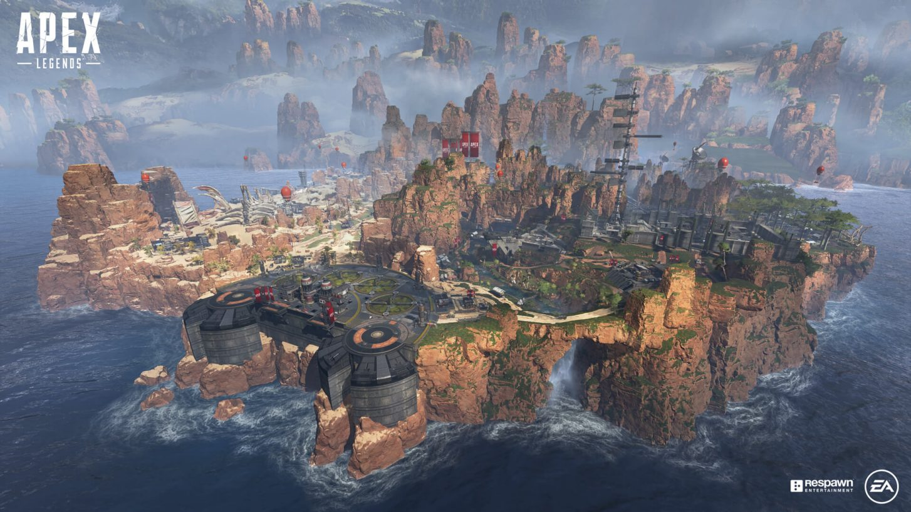

The Maps
Originally, the game only contained one map, that being Kings Canyon, and this remained true from season zero all the way through season 2. After that more and more maps were released, and the maps that already existed in the game got changed and updating in all sorts of ways. On this page, we will look at all the different maps, how they fit into the games story, how they changed, and why.

Home
Legends